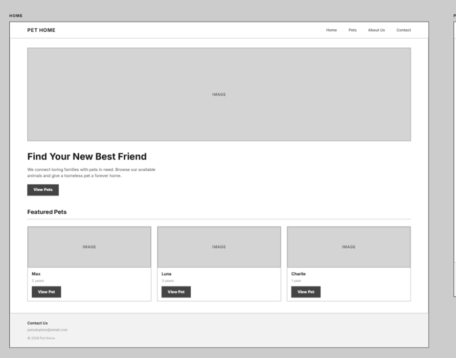
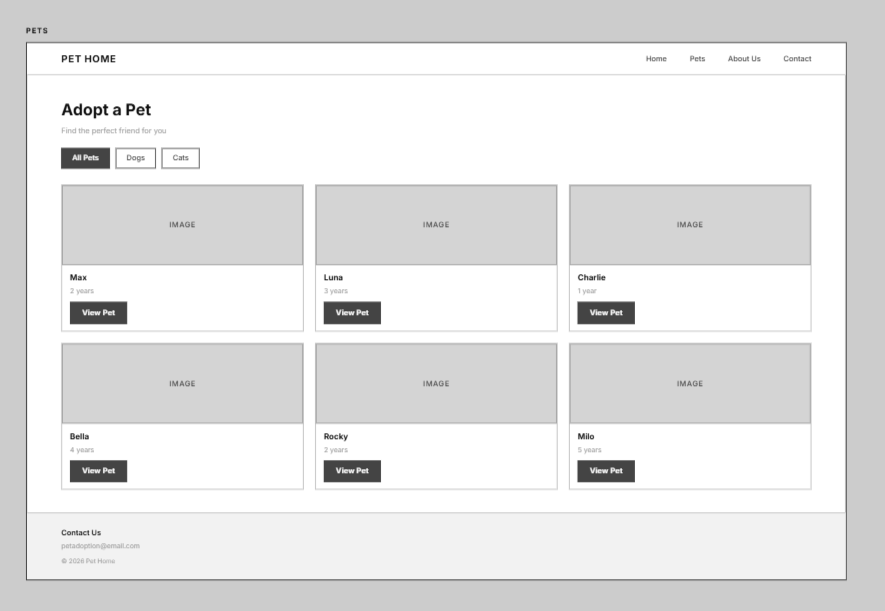
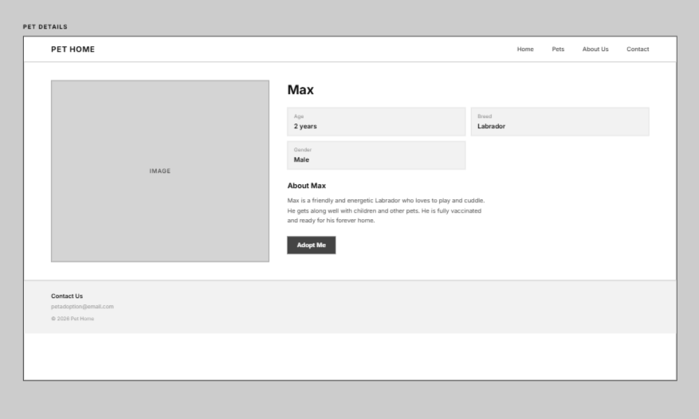
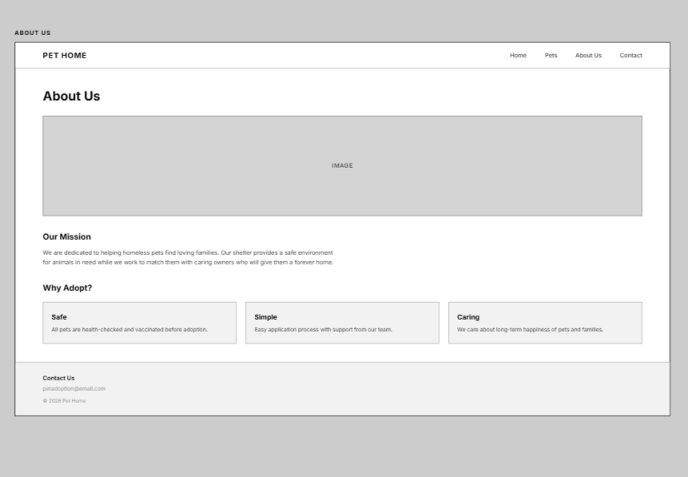
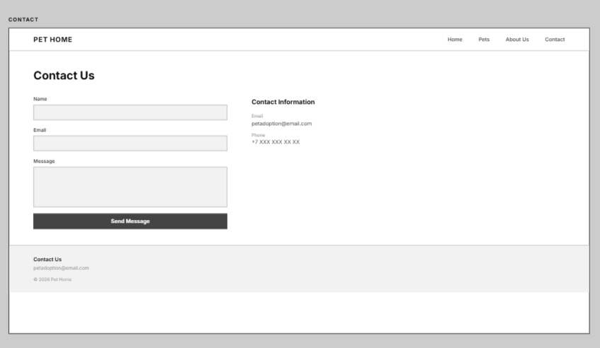
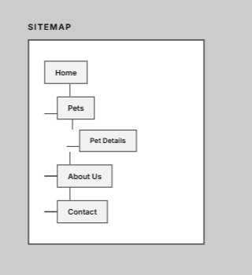

Project Description
Pet Home is a pet adoption website designed to help people find pets that need a new home. The target users are people who are interested in adopting dogs and cats. Users can browse available pets, view information about each animal, and contact the organization. The main purpose of the website is to make the pet adoption process simple and convenient.
Home Page
The Home page introduces the Pet Home website and shows featured pets that are available for adoption.

Pets Page
The Pets page displays available animals and allows users to browse dogs and cats.

Pet Details Page
The Pet Details page provides information about a selected pet, including its age, breed, gender, and description.

About Us Page
The About Us page explains the purpose of the organization and its mission to help pets find new families.

Contact Page
The Contact page allows users to send a message and provides the contact information of the organization.

Sitemap
The sitemap shows the navigation structure of the Pet Home website and how the five pages are connected.
